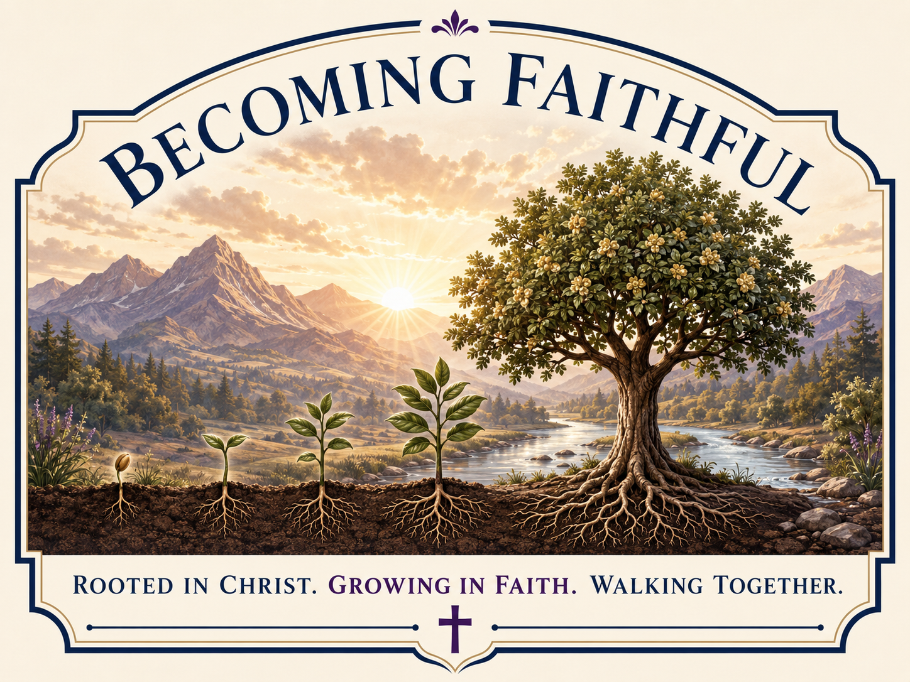

Ama a Dios. Ama a las Personas.
Becoming Faithful
Siguiendo a Jesús y animándonos unos a otros a crecer en amor, esperanza, fe, sabiduría y la vida cotidiana—un paso a la vez.
¿Qué es Becoming Faithful?
Becoming Faithful es un ministerio en crecimiento construido sobre el fundamento de Jesucristo, centrado en la definición del amor que encontramos en 1 Corintios 13, mientras buscamos aprender a amar bien a Dios y a las personas.
A partir de agosto de 2025, comencé a trabajar como anfitrión de hospitalidad en Chick-fil-A en Tucson, Arizona. Durante el año siguiente, trabajando alrededor de 30 horas o más cada semana, tuve la oportunidad de conocer y conversar con personas de muchos ámbitos diferentes de la vida. Muchas de esas conversaciones comenzaban con una pregunta sencilla: “¿Cómo va tu día?”. Ya fuera que alguien dijera que su día iba bien o mal, a menudo le preguntaba qué había hecho que su día fuera así.
Cuando me preguntaban acerca de mi día, trataba de ser tan honesto y transparente como podía, no solo con ellos, sino también conmigo mismo. Algunos días eso significaba compartir algo con lo que estaba luchando, una falla, un error o una pregunta que todavía estaba tratando de entender.
A medida que comencé a conectarme con personas en línea a través de las redes sociales, comenzando con Instagram y, aún más importante, con su plataforma conectada Threads, esas mismas conversaciones comenzaron a extenderse más allá de las personas que veía en persona.
¿No te he mandado yo? Sé fuerte y valiente; no temas ni te desanimes, porque el Señor tu Dios está contigo dondequiera que vayas. — Josué 1:9
Aquí estoy usando una traducción al español basada en la King James Version, porque esa es la traducción que estaba leyendo y sobre la que estaba reflexionando durante esta parte del camino.
Para mí, eso significó estar dispuesto a alejarme de la comodidad y la estabilidad que había encontrado en Chick-fil-A, incluida la seguridad de saber que podía recibir un sueldo constante.
Becoming Faithful se convirtió en un punto de partida para algo que espero que continúe mucho más allá de mí: una comunidad en crecimiento de personas que aprenden a amar a Dios, amar a los demás y crecer juntas un paso a la vez.
Construido Desde el Principio
Este es el primer sitio web que he construido. Comencé sin experiencia creando un sitio web desde cero y decidí aprenderlo un paso a la vez. Después de unas semanas de trabajo intencional —muchos días dedicando entre 10 y 17 horas a aprender, construir, probar, cometer errores, corregirlos e intentar de nuevo— esto es en lo que se ha convertido ese proceso.
Pero la historia detrás de este sitio web también está conectada con una transición mucho más grande en mi vida.
1 de agosto de 2026
El 1 de agosto de 2026, me comuniqué con el dueño del Chick-fil-A donde trabajaba y le pregunté sobre la posibilidad de tomar una licencia de tres meses para poder dedicarme a Becoming Faithful. Me dijo que contaba con su apoyo y sus oraciones. No podía garantizar que habría un puesto disponible si decidía regresar después de esos tres meses, pero estaba dispuesto a conversar conmigo cuando llegara ese momento.
Por esas mismas fechas, también había pedido a la gerencia tener libres el 6 y 7 de agosto para poder asistir al Global Leadership Summit. No había recibido una respuesta.
4 de agosto de 2026
El martes 4 de agosto fui a trabajar como lo hacía normalmente. En un momento, estaba limpiando una puerta de entrada que la mayoría de las personas no usaban. Afuera había un hombre que estaba viviendo una situación de falta de vivienda. Sentí que Dios puso en mi corazón preguntarle si quería algo de comer.
Él dijo que sí.
Le pregunté qué quería, y me dijo: “Lo que tú quieras darme”. Le dije: “No, hombre, puedo conseguirte lo que tú quieras”.
Después de que me dijo qué quería, le pregunté si quería entrar y salir del calor mientras yo conseguía su comida. Me preguntó si estaba seguro. Le dije: “Absolutamente”.
Y le pregunté su nombre.
Su nombre es Brian.
Eso es importante para mí. Brian no es simplemente “un hombre sin hogar”. Es una persona con un nombre, una historia y valor.
Brian entró, se sentó, comió la comida que yo había comprado para él y finalmente se fue.
Después, la gerencia me dijo que no tenía permitido invitar al restaurante a personas que estuvieran viviendo una situación de falta de vivienda para darles comida. Expliqué que yo mismo había pagado la comida de Brian y que no entendía cuál era el problema. También les dije que si cuidar de alguien en esa situación era algo que yo no podía hacer, no estaba seguro de poder seguir siendo parte de la empresa.
Me dijeron que esperara hasta que llegara Recursos Humanos.
Cuando llegó Recursos Humanos, me preguntaron qué había sucedido. Les conté exactamente lo que había pasado. Cuando expliqué que había invitado a Brian a entrar, me entregaron una amonestación por escrito en la que afirmaban que yo había violado una política de seguridad.
También me dijeron que habían escuchado que yo quería irme y que, debido a los costos laborales, debía marcar mi salida inmediatamente y no regresar durante el resto de los turnos que tenía programados esa semana.
Me despedí.
A las 10:31 a. m. del 4 de agosto de 2026, mi tiempo trabajando en Chick-fil-A llegó a su fin.
Por Qué Decidí Mantenerme Firme
La situación con Brian no era lo único que pesaba sobre mí. También había habido otros momentos más pequeños en los que sentía que la gerencia me estaba pidiendo que comprometiera los estándares que había establecido para mí mismo.
En algún momento me di cuenta de que, si no estaba dispuesto a mantenerme firme en lo que creía mientras mis responsabilidades todavía eran relativamente limitadas, probablemente sería aún más difícil a medida que la vida avanzara.
Parte de esa comprensión vino de escuchar a los clientes y conocer sus historias. Había conversaciones con personas sobre el trabajo, las cuentas, la familia, las responsabilidades, decisiones que habían tomado y circunstancias en las que nunca esperaron permanecer. Esas conversaciones se quedaron conmigo.
En ese momento también estaba invirtiendo en mentoría. Había invertido US$7,000 para aprender de personas que habían construido negocios y carreras que generaban más de US$1 millón. Un mensaje que escuché repetidamente fue que me estaba permitiendo permanecer limitado por los confines de mi trabajo en Chick-fil-A en lugar de perseguir plenamente lo que creía que estaba siendo llamado a construir.
No interpreté eso como si hubiera algo malo en trabajar en Chick-fil-A o en tener un trabajo estable. La pregunta para mí era si estaba utilizando la seguridad y la estructura de ese trabajo como una razón para seguir retrasando decisiones que ya sabía que necesitaba tomar.
Entre esas conversaciones, las historias que los clientes habían compartido conmigo, los pequeños compromisos que sentía que estaba haciendo y finalmente lo que ocurrió con Brian, podía ver que se estaba formando un patrón. Sabía que, si seguía diciéndome “más tarde”, podría volverse mucho más difícil cambiar de dirección una vez que tuviera más responsabilidades y más personas dependiendo de mí.
Comencé a comprender lo fácil que sería que más responsabilidades, más obligaciones financieras y más personas dependiendo de mí hicieran más sencillo seguir diciéndome: “Todavía no”. Podía ver cómo pequeños compromisos podrían volverse normales poco a poco, y cuánto más difícil podría llegar a ser alejarme después de algo que sabía que debía haber enfrentado antes.
No quería entrar en ese ciclo.
Así que cuando ocurrió la situación con Brian, se convirtió en algo más que un desacuerdo sobre una comida. Para mí, planteó una pregunta más grande: si creía que algo era correcto, ¿estaba realmente dispuesto a aceptar un costo por mantenerme firme en ello?
Dejar mi trabajo sí me costó. Me dolió entonces, y aun mientras escribo esto el 14 de agosto de 2026, todavía existen consecuencias reales de esa decisión.
Pero el dolor que siento ahora no es nada comparado con lo que creo que habría sentido si me hubiera quedado y, poco a poco, hubiera comprometido los estándares que había elegido mantener para mí mismo.
Prefiero afrontar con honestidad el costo de una decisión que creía que necesitaba tomar que mirar hacia atrás años después y darme cuenta de que poco a poco me había vuelto dispuesto a abandonar mis convicciones simplemente porque alejarme se había vuelto más difícil.
6 y 7 de agosto de 2026
El final inesperado de mi tiempo en Chick-fil-A abrió la puerta para que pudiera asistir al Global Leadership Summit los días 6 y 7 de agosto, el mismo evento para el que anteriormente había pedido tener esos días libres.
Mientras estaba allí sentado, escuchando hablar a los líderes, algo se volvió claro para mí:
Necesitaba entregarme por completo a Becoming Faithful.
Construyendo Fundamentos Sólidos
Así que este sitio web es más que una colección de archivos HTML y CSS. Es parte de esa decisión.
Estoy aprendiendo mientras lo construyo. Estoy cometiendo errores, haciendo preguntas, corrigiendo cosas, comenzando de nuevo cuando es necesario y tratando de construir fundamentos sólidos en lugar de apresurarme hacia algo que simplemente parezca terminado.
Ese proceso refleja lo que espero que Becoming Faithful siempre sea: una disposición a aprender abiertamente, vivir con transparencia, amar a Dios, amar a las personas, aceptar corrección y continuar avanzando un paso a la vez.
Cómo Becoming Faithful Define el Amor
En el corazón de Becoming Faithful hay algo sencillo: amar a Dios y amar a las personas. Pero ¿cómo se ve realmente ese amor? Para nosotros, la respuesta comienza en 1 Corintios 13.
El amor es paciente y bondadoso; no tiene envidia, no presume ni se llena de orgullo. No actúa de manera indebida, no busca lo suyo, no se irrita fácilmente y no guarda rencor. No se alegra de la injusticia, sino que se alegra con la verdad. Todo lo soporta, todo lo cree, todo lo espera y todo lo persevera.
Así, las Escrituras nos muestran tanto lo que el amor es como lo que no es. El amor es paciente y bondadoso. Se alegra en la verdad, soporta, cree, espera y persevera.
Las Escrituras también muestran por qué el amor es tan esencial. Pablo escribe que incluso si alguien pudiera hablar con dones extraordinarios, tener gran conocimiento o hacer cosas impresionantes, sin amor no tendría verdadero valor.
Por eso el amor es fundamental y no puede ser simplemente otra parte de Becoming Faithful. Tiene que estar en el centro de todo lo que hacemos.
Y ahora permanecen la fe, la esperanza y el amor, estos tres; pero el mayor de ellos es el amor. — 1 Corintios 13:13
Cómo Crecemos
Becoming Faithful se enfoca en cinco áreas de crecimiento: Amor, Esperanza, Fe, Sabiduría y Vida Cotidiana.
Amor
Aprender a amar a Dios y a las personas con mayor fidelidad en la manera en que hablamos, escuchamos, servimos, perdonamos, animamos y vivimos cada día.
Esperanza
Aprender a aferrarnos a la esperanza en Dios, especialmente cuando la vida se siente incierta, difícil o diferente de lo que esperábamos.
Fe
Aprender a confiar más profundamente en Dios, seguirlo con fidelidad y continuar avanzando incluso cuando no tengamos todas las respuestas ni podamos ver claramente lo que viene después.
Sabiduría
Aprender a buscar la sabiduría de Dios, hacer mejores preguntas, escuchar con cuidado, aprender de los demás, aceptar corrección y tomarnos el tiempo para comprender antes de responder.
Vida Cotidiana
Aprender a vivir lo que creemos en la vida cotidiana a través de nuestras decisiones, relaciones, trabajo, finanzas, hábitos, responsabilidades y la manera en que tratamos a las personas.
Cómo Se Ve Esto en la Vida Cotidiana
Becoming Faithful no se trata solamente de lo que creemos, sino de cómo esas creencias dan forma a la manera en que vivimos cada día.
El crecimiento puede ocurrir en cada oportunidad y situación, ya sea en la manera en que hablamos con las personas, manejamos los desacuerdos, respondemos a la dificultad o tomamos decisiones.
Elegir la Dirección en la que Crecemos
Cada experiencia puede moldearnos. Las dificultades pueden hacernos más compasivos o más amargados. Los desacuerdos pueden enseñarnos a escuchar y comprender, o pueden llevarnos a cerrarnos y alejarnos unos de otros.
Cuando respondemos con amor, puede ayudarnos a expulsar el temor, como dice 1 Juan 4:18: “el perfecto amor echa fuera el temor”.
Por eso queremos crecer intencionalmente hacia el amor descrito en 1 Corintios 13: un amor paciente, bondadoso, veraz, fiel y dispuesto a seguir creciendo.
Aprendiendo a Través de la Vida Cotidiana
Esto significa que la vida cotidiana se convierte en una oportunidad para aprender. Nuestras relaciones con la familia, los amigos, los compañeros de trabajo, las personas de nuestra comunidad, los desconocidos e incluso aquellos con quienes no estamos de acuerdo pueden enseñarnos algo.
El Crecimiento es un Proceso Continuo
Nada de esto significa que responderemos perfectamente en cada situación. Cometeremos errores, malinterpretaremos a las personas, reaccionaremos mal en ocasiones y descubriremos áreas en las que todavía necesitamos crecer.
Permanecer abiertos a aprender también significa que no toda idea o interpretación debe ser aceptada como verdadera. Cuando algo parece estar en contra de la Palabra de Dios, queremos volver a las Escrituras, hacer preguntas, escuchar con humildad y buscar la verdad en lugar de simplemente defender nuestra propia opinión.
A través de esas conversaciones, nuestro estándar final no es nuestro orgullo, opinión personal o deseo de tener la razón, sino regresar continuamente a la Palabra de Dios.
La meta no es la perfección. La meta es permanecer humildes y dispuestos a aprender, aceptar corrección, admitir cuando estamos equivocados y seguir avanzando un paso a la vez.
En el fundamento de todo esto está el amor; no simplemente el amor como nosotros lo definimos personalmente, sino el amor descrito en 1 Corintios 13.
Nuestra Misión
La misión de Becoming Faithful es Amar a Dios y Amar a las Personas siguiendo a Jesús y animándonos unos a otros a crecer en amor, esperanza, fe, sabiduría y vida cotidiana.
Becoming Faithful es un lugar para aprender abiertamente, vivir con transparencia, hacer preguntas honestas, buscar rendición de cuentas y seguir creciendo juntos. No afirmamos tener todo resuelto. Queremos compartir las lecciones, los errores, las preguntas y el crecimiento a lo largo del camino, permanecer dispuestos a escuchar y ser corregidos, y seguir avanzando un paso a la vez.
Este espacio está abierto para todos, ya sea que simplemente tengas curiosidad, seas creyente o no estés seguro de lo que crees. Eres bienvenido a aprender junto con nosotros, hacer preguntas, compartir tu perspectiva y ver cómo puede verse seguir a Jesús en la vida cotidiana.
Por encima de todo, queremos que Becoming Faithful permanezca centrado en amar a Dios y amar a las personas. Becoming Faithful nunca debe convertirse en algo que protejamos por su propio nombre. Si proteger el nombre alguna vez requiere que dejemos de amar a las personas, ignoremos la verdad, resistamos la corrección o perdamos de vista a Dios, entonces habremos perdido la razón misma por la que Becoming Faithful existe.
Nuestros Compromisos
Becoming Faithful no está construido sobre la idea de que siempre haremos todo correctamente. Estamos comprometidos a permanecer humildes, aprender abiertamente, vivir con transparencia, hacer preguntas honestas, escuchar para comprender y estar dispuestos a recibir corrección.
Queremos que la rendición de cuentas venga no solo de personas que están de acuerdo con nosotros, sino también de personas que no están de acuerdo con nosotros o que nos critican. La verdad no se vuelve menos importante por quién la diga. Queremos escuchar, examinar lo que se está diciendo, volver a las Escrituras y cambiar cuando sea necesaria una corrección.
Cuando estemos equivocados, queremos estar dispuestos a decir: “Estábamos equivocados”, corregir las cosas cuando sea posible, aprender de ello y seguir avanzando. Proteger la imagen, el nombre, la influencia, los seguidores o el futuro de Becoming Faithful nunca debe ser más importante que amar a Dios, amar a las personas y decir la verdad con amor.
Estos compromisos no son una afirmación de que los viviremos perfectamente. Son estándares a los que queremos volver continuamente y a los que invitamos a otros a exigirnos que rindamos cuentas.
Cómo Puedes Participar
Becoming Faithful comienza con una persona. Para mí, eso significa que comienza conmigo eligiendo cada día Amar a Dios y Amar a las Personas con mayor fidelidad. A partir de ahí, la esperanza es que una persona impacte a otra persona, quien impacte a otra, y que continúe una persona a la vez.
No tienes que dar dinero para ser parte de Becoming Faithful. Más que apoyo financiero, quiero ver a personas formar parte de una comunidad que realmente está tratando de Amar a Dios y Amar a las Personas en la vida cotidiana. Si una persona elige amar, escuchar, animar, perdonar, servir, aprender o ayudar a alguien, y eso impacta a otra persona que hace lo mismo, eso importa.
Otra manera en que puedes ayudar es simplemente compartiendo y difundiendo el mensaje. Puedes compartir Becoming Faithful con alguien personalmente o compartir sus publicaciones, videos, historias y recursos en las redes sociales. El propósito no es simplemente aumentar números o conseguir seguidores. La esperanza es que compartir ayude a que cada persona que pueda necesitar ánimo, tenga una historia que compartir, quiera hacer preguntas o quiera crecer junto con la comunidad pueda encontrar Becoming Faithful.
Apoyando el Trabajo
Becoming Faithful continuará haya o no apoyo financiero. El apoyo puede crear más tiempo y oportunidades para escuchar, aprender, crear, conectarse con personas y alcanzar a más personas una persona a la vez.
Para cualquiera que elija apoyar económicamente, la invitación estándar es US$1 al mes. Dar más siempre es voluntario y nunca le da a nadie mayor influencia, prioridad o control sobre Becoming Faithful.
El apoyo financiero es solo una manera de participar. Compartir Becoming Faithful, animar a otra persona, contribuir con tus habilidades, hacer preguntas y elegir Amar a Dios y Amar a las Personas con mayor fidelidad también importan.
Aprende Más Sobre Cómo Apoyar a Becoming Faithful